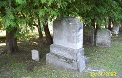
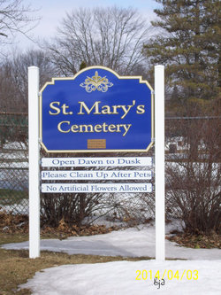

<div class="container-fluid">
	<div class="row" style="color:#ffffff;">
	  <div class="col-md-7">
		Birth: 	May 8, 1814<br>
		Death: 	Jul. 23, 1890<br>
	  </div>
	  <div class="col-md-5"> </div>
	</div>
	<div class="row" style="color:#ffffff;">
	  <div class="col-md-7">
		wife Marguerite S<br>
		<br>
		Family links: <br>
		 Spouse:<br>
		  Marguerite S. Medor (1814 - 1883)<br>
	  </div>
	  <div class="col-md-5"></div>
	</div>
	<div class="row" style="color:#ffffff;">
	  <div class="col-md-7">
		Burial:<br>
		<a href="https://www.google.com/maps/place/65+Canada+St,+Swanton,+VT+05488/@44.921747,-73.118642,17z/data=!4m7!1m4!3m3!1s0x4cca1e6ed3ac5dc5:0xcb7f9dc6973007f8!2s65+Canada+St,+Swanton,+VT+05488!3b1!3m1!1s0x4cca1e6ed3ac5dc5:0xcb7f9dc6973007f8">Saint Marys Cemetery <br>
		65 Canada Street<br>
		Swanton<br>
		Franklin County<br>
		Vermont 05488</a><br>
	  </div>
	  <div class="col-md-5"></div>
	</div>
	<div class="row" style="color:#ffffff;">
	  <div class="col-md-7">
		Created by: <a href="http://www.findagrave.com/cgi-bin/fg.cgi?page=mr&MRid=46785064">Barb Destromp</a><br>
		Record added: Jun 29, 2006 <br>
		Find A Grave Memorial# 14766454<br>
	  </div>
	  <div class="col-md-5"></div>
	</div>
</div>

<!--  -->
